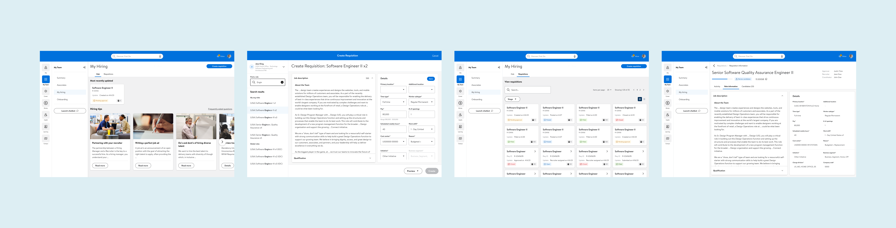

Consolidated Hiring Experience for Walmart Home Office Hiring Managers
Overview
I created the design and prototype based on the product requirements document (PRD) and annotated the design with UX requirements for engineering handoff. I built and updated user journey maps for each drop to better understand user needs. I created user flow and information architecture to help business and product understand the design team’s vision.Role
Senior UX Designer
Date
March 2023 - Present
Company
Walmart Global Tech
Introduction
Problem Statement
Hiring Manager Problem
As a Hiring Manager, I have to switch between platforms to view and complete my hiring tasks. Also, I have to rely on my peers and recruiters to direct me to which systems are necessary and preferred to complete each task.
Business Problem
As a business, the time lost and money spent on lost productivity is costly. Also, it creates confusion and errors in the process.
Goal
Create a consolidated hiring experience for hiring managers to view all necessary information and complete tasks in one place. Automate where possible to prepopulate information.
Target Audience
Walmart Home Office Hiring managers.
Full Scope
Hiring Experience Evolved was initiated in 2022 to create a seamless, consumer-grade experience for both Hiring Managers and Recruiters. The hiring process is disjointed and duplicative. This has resulted in a very manual experience for both hiring managers and recruiters and consequently, a high error rate and frustrations for the candidates, hiring managers, and recruiters.
It is a mini-app in Me@Campus application and responsive in desktop, tablet, and mobile views. The design team is responsible for delivering high-fidelity mockups, prototypes, error states, user flows, information architecture, and user testings.
My Role
I delivered the design and prototype for Q2, Q3, Q4 for 2023 and Q1 for 2024 and created and managed the project timeline.
Design Process
Product Requirement
Product Requirement Document (PRD) was handed to the design team through Confluence. The designs are selected to best represent each drop and do not mean to reflect every screen that was released.
UX Requirement
The UX team delivered the design and UX requirements to the engineering team in a separate handoff file with annotations.
User Test
Before each release, the design was user-tested with the target audience by a UX researcher. I joined the user interview sessions to ask questions at the end, documented the feedback, and incorporated the findings into the design.
Disclaimer: The designs do not represent the whole hiring process and do not include every screen that was released for each drop. They are meant to delineate the bigger picture of the project and edited to hide business details.
Quarter 2 Fiscal Year 2024 Highlights
- Delivered the MVP in less than 2 weeks after joining the project.
- Create a requisition, View requisitions, Track status of the requisition
Quarter 3 Fiscal Year 2024 Highlights
- Defined My Hiring’s statuses and mapped to its corresponding Workday statuses.
- Workshopped and defined the user needs and prioritized the features based on the priority and opportunity cost to incorporate Generative AI in the requisition creation process.
- Requisition activity log, View Candidate List, Search and filter candidates, View candidate details
Quarter 4 Fiscal Year 2024 Highlights
- Redesigned the Hub for action-based tasks.
- Reclassified the requisition and candidate statuses in alignment with Phenom stages.
- Schedule interviews, View scheduled interviews, View forwarded candidates in the candidate list, View candidate details in the Candidate Panel, Leave Notes, and Evaluate.
Quarter 3 Fiscal Year 2024 Highlights
- Created a version for the Interview Panel.
- Updated the language based on the user research and pilot study.
- Expanded the Candidate Panel to an expanded Candidate detail page.
Reflection
Throughout the project cycle, the goals of the Hiring Experience Evolved were achieved. From the user testing and after the release of the pilot to a selected group of hiring managers, we received feedback that the mini-app was extremely helpful, simplifies the hiring process, and intuitive to use. The addition of Hub was not specified by the product requirement document, but was the result of the design team ideating and innovating to solve for the best user experience to assist the hiring managers with the completion of the tasks. Solving for a complex problem with several features, of which stem from multiple platforms, was challenging yet intellectually satisfying. I truly enjoyed working with the team!